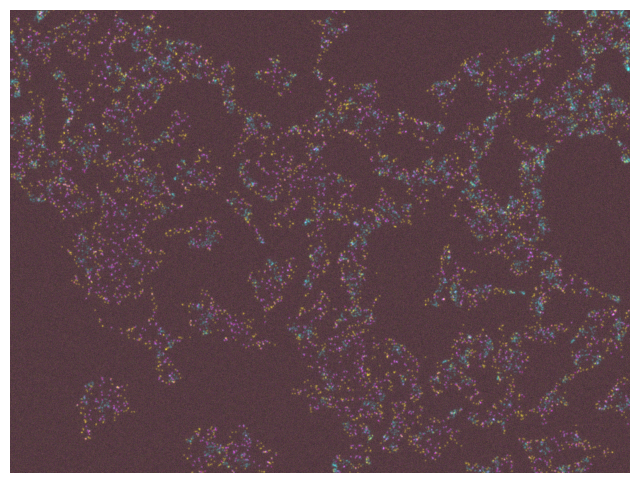
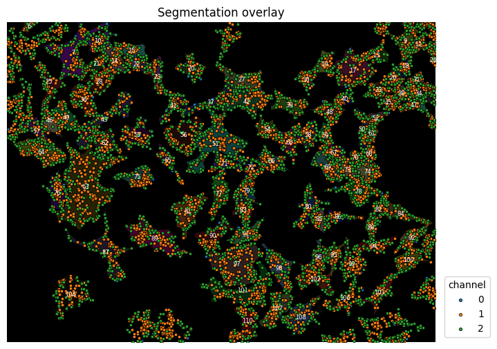
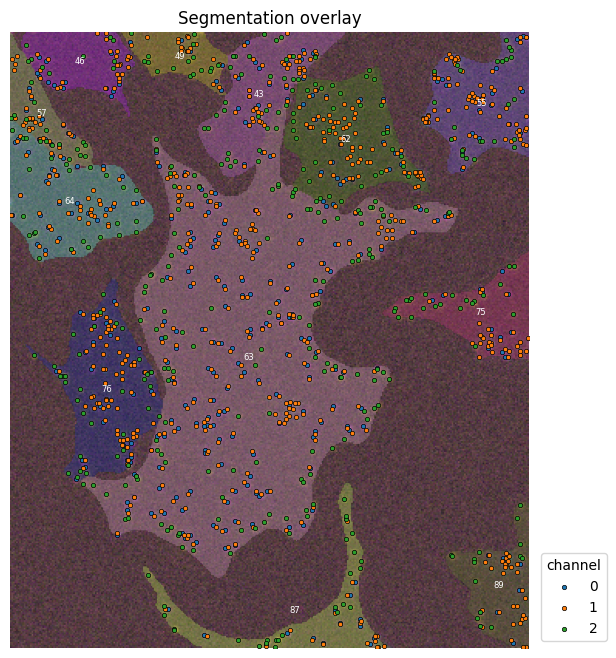
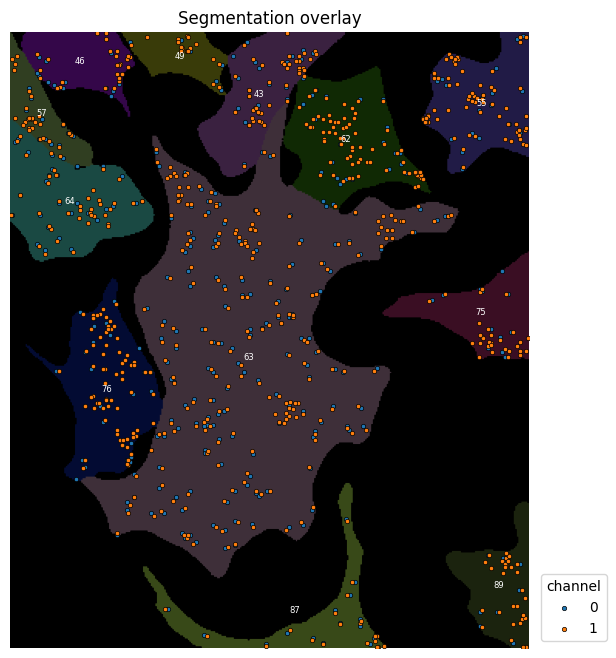
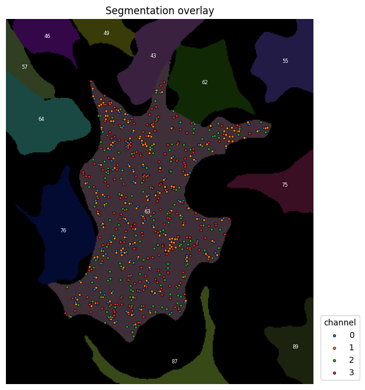
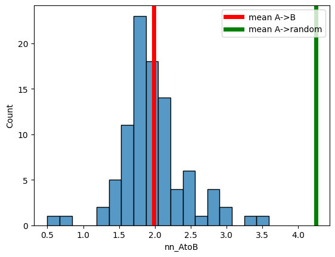
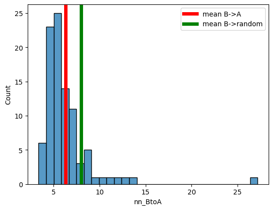
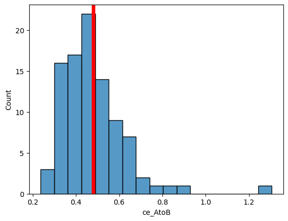
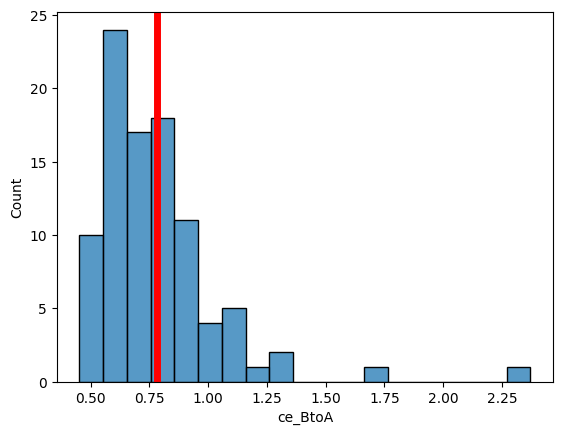

Notebook 2: Do two different protein clusters co-localize?#
# /// script
# requires-python = ">=3.10"
# dependencies = [
# "matplotlib",
# "numpy",
# "scikit-image",
# "scipy",
# "tifffile",
# "imagecodecs",
# "pandas",
# "seaborn",
# "bobiac_tools @ git+https://github.com/bobiac/bobiac-tools.git"
# ]
# ///
Overview#
In this notebook, we will learn how to assess whether two proteins co-localize.
Dataset#
Our data consists of fluorescence images with five channels:
Channel |
Staining |
Staining Description |
|---|---|---|
0 |
Hoechst |
Nuclear stain |
1 |
Phalloidin |
F-actin stain; whole cell marker |
2 |
Protein A |
Spot pattern |
3 |
Protein B |
Spot pattern |
4 |
Protein C |
Spot pattern |
0. Importing libraries#
import matplotlib.pyplot as plt
import numpy as np
import pandas as pd
import seaborn as sns
import skimage
import tifffile
from bobiac_tools import overlay_labels
from scipy.spatial import KDTree
2. Load image, mask and spot table#
First, we load all the data that we will need for this notebook.
path_image = '../../_static/images/quant/05_spatial_stats/images/F02_821.tif'
path_mask = '../../_static/images/quant/05_spatial_stats/masks/F02_821w1.TIF'
path_spots = '../../_static/images/quant/05_spatial_stats/spots/F02_821_spots.csv'
image = tifffile.imread(path_image)
mask = tifffile.imread(path_mask)
df_spots = pd.read_csv(path_spots)
mask = skimage.segmentation.clear_border(mask)
---------------------------------------------------------------------------
FileNotFoundError Traceback (most recent call last)
Cell In[3], line 5
1 path_image = '../../_static/images/quant/05_spatial_stats/images/F02_821.tif'
2 path_mask = '../../_static/images/quant/05_spatial_stats/masks/F02_821w1.TIF'
3 path_spots = '../../_static/images/quant/05_spatial_stats/spots/F02_821_spots.csv'
4
----> 5 image = tifffile.imread(path_image)
6 mask = tifffile.imread(path_mask)
7 df_spots = pd.read_csv(path_spots)
8
File ~/work/bobiac-book/bobiac-book/.venv/lib/python3.12/site-packages/tifffile/tifffile.py:1256, in imread(files, selection, return_as, aszarr, key, series, kind, level, squeeze, maxworkers, buffersize, mode, name, offset, size, pattern, axesorder, categories, imread, imreadargs, sort, container, chunkshape, chunkdtype, axestiled, ioworkers, chunkmode, fillvalue, zattrs, multiscales, omexml, superres, out, out_inplace, _multifile, _useframes, **kwargs)
1252 ):
1253 files = files[0]
1254
1255 if isinstance(files, str) or not isinstance(files, Sequence):
-> 1256 with TiffFile(
1257 files,
1258 mode=mode,
1259 name=name,
File ~/work/bobiac-book/bobiac-book/.venv/lib/python3.12/site-packages/tifffile/tifffile.py:4554, in TiffFile.__init__(self, file, mode, name, offset, size, omexml, superres, _multifile, _useframes, _root, **is_flags)
4550 raise ValueError(msg)
4551 self._omexml = omexml
4552 self.is_ome = True
4553
-> 4554 fh = FileHandle(file, mode=mode, name=name, offset=offset, size=size)
4555 self._fh = fh
4556 self._multifile = True if _multifile is None else bool(_multifile)
4557 self._files = {fh.name: self}
File ~/work/bobiac-book/bobiac-book/.venv/lib/python3.12/site-packages/tifffile/tifffile.py:12751, in FileHandle.__init__(self, file, mode, name, offset, size)
12747 self._offset = -1 if offset is None else offset
12748 self._size = -1 if size is None else size
12749 self._close = True
12750 self._lock = contextlib.nullcontext()
> 12751 self.open()
12752 assert self._fh is not None
File ~/work/bobiac-book/bobiac-book/.venv/lib/python3.12/site-packages/tifffile/tifffile.py:12771, in FileHandle.open(self)
12767 msg = f'invalid mode {self._mode}'
12768 raise ValueError(msg)
12769 self._file = os.path.realpath(self._file)
12770 self._dir, self._name = os.path.split(self._file)
> 12771 self._fh = open( # noqa: SIM115
12772 self._file, self._mode, encoding=None
12773 )
12774 self._close = True
FileNotFoundError: [Errno 2] No such file or directory: '/home/runner/work/bobiac-book/bobiac-book/content/_static/images/quant/05_spatial_stats/images/F02_821.tif'
Visualy inspect the images, masks and spots#
To be sure that the data we are workin with is corrects, we visualise it here.
overlay_labels(image[2:,:,:])
(<Figure size 800x800 with 1 Axes>, <Axes: >)

overlay_labels(label_mask=mask, coordinates=df_spots)
(<Figure size 800x800 with 1 Axes>,
<Axes: title={'center': 'Segmentation overlay'}>)

Using the focus attribute in overlay we can zoom in to view single objects.
overlay_labels(image=image[2:,:,:], label_mask=mask, coordinates=df_spots, focus_object=63)
(<Figure size 673.684x800 with 1 Axes>,
<Axes: title={'center': 'Segmentation overlay'}>)

3. Make An Analysis Plan#
Question#
Do Protein A spots co-localize with Protein B spots?
Approach#
Answering this question is very similar to answering the question of if spots are clustered. Instead of finding nearest neighbours for each point within its own dataset, we find the nearest neighbours of points in datasset A to points in dataset B.
Workflow#
1. Generate a reference for comparison#
Randomly distributed set of points inside each cell’s cytoplasm. We will call this the random dataset, which we will compare to our protein datasets.
2. Measure the nearest neighbor distance#
For every spot in dataset A, identify the closest spot in dataset B and measure the distance.
3. Calculate the average nearest neighbour distance#
Average the two distances across all spots in the cell.
4. Calculate the Clark-Evans Index#
Calculate the ratio of the average A-B distance compared to the A-random distance. - Ratio = 1: Spots in dataset B and the spots in the random dataset are both distributed independently of spots in dataset A - Ratio < 1: Spots in dataset A co-localise with spots in dataset B - Ratio > 1: Spots in dataset A and B avoid each other
5. Calculate the p-value of the Clark-Evans Index#
Calculate the p-value using a comparison of multiple random patterns.
6. Calculate the reverse direction of comparison#
Measure the distance of every spot in dataset B to dataset A, then repeat the analysis. The two directions are not interchangeable. If set B is much denser than A, every A point will happen to be near some B point even at random, making A→B appear co-localized by chance. Measuring B→A guards against this: if B is merely dense everywhere rather than specifically clustering around A, most B points will still be far from A and the ratio will stay near 1. True mutual co-localization produces small ratios in both directions.
4. Assemble Datasets#
overlay_labels(label_mask=mask, coordinates=df_spots.loc[df_spots['channel'].isin([0,1])], focus_object=cell_id)
(<Figure size 673.684x800 with 1 Axes>,
<Axes: title={'center': 'Segmentation overlay'}>)

Generate random point distribution#
As before, we focus on one cell to illustrate the principles. First, we need to generate two random set of points, one each as a random distribution of the points of protien A and B (same number of points).
cell_id = 63
spots_A = df_spots.loc[(df_spots['channel']==0) & (df_spots['label_cell']==cell_id)][['y', 'x']].to_numpy()
spots_B = df_spots.loc[(df_spots['channel']==1) & (df_spots['label_cell']==cell_id)][['y', 'x']].to_numpy()
n_A, n_B = spots_A.shape[0], spots_B.shape[0]
rnd_A = random_points_in_mask(mask, cell_label=cell_id, n=n_A)
rnd_B = random_points_in_mask(mask, cell_label=cell_id, n=n_B)
overlay_labels(label_mask=mask, coordinates=[spots_A, spots_B, rnd_A, rnd_B], focus_object=cell_id)
(<Figure size 673.684x800 with 1 Axes>,
<Axes: title={'center': 'Segmentation overlay'}>)

5. Calculate Nearest Neighbour Distances#
We calculate the nearest neighbour distances from
protein A spots to protein B spots
protein B spots to protein A spots
protein A spots to randomised B spots
protien B spots to randomised A spots
nn_AtoB = KDTree(spots_B).query(spots_A, k=1)[0].mean()
nn_BtoA = KDTree(spots_A).query(spots_B, k=1)[0].mean()
nn_ArndB = KDTree(rnd_B).query(spots_A, k=1)[0].mean()
nn_BrndA = KDTree(rnd_A).query(spots_B, k=1)[0].mean()
print('Mean NN dist. A->B:', nn_AtoB)
print('Mean NN dist. B->A:', nn_BtoA)
print('Mean NN dist. A->random(B):', nn_ArndB)
print('Mean NN dist. B->random(A):', nn_BrndA)
Mean NN dist. A->B: 1.9696171301040926
Mean NN dist. B->A: 3.3610265155268935
Mean NN dist. A->random(B): 6.508343152191545
Mean NN dist. B->random(A): 7.741334209284501
6. Calculate Clark-Evans Indices#
Now we can calculate our Clark-Evans indices.
ce_AB = nn_AtoB / nn_ArndB
ce_BA = nn_BtoA / nn_BrndA
print('Clark-Evans index A->B:', ce_AB)
print('Clark-Evans index B->A:', ce_BA)
Clark-Evans index A->B: 0.3026295762295303
Clark-Evans index B->A: 0.434166310956563
7. Repeat Steps 4-6 with Multiple Random Patterns#
As before, we need to compare to multiple random patterns.
n_repeats = 100
sims_AtoB, sims_BtoA = [], []
for _ in range(n_repeats):
rnd_A = random_points_in_mask(mask, cell_label=cell_id, n=n_A)
rnd_B = random_points_in_mask(mask, cell_label=cell_id, n=n_B)
sims_AtoB.append(KDTree(rnd_B).query(spots_A, k=1)[0].mean())
sims_BtoA.append(KDTree(rnd_A).query(spots_B, k=1)[0].mean())
sims_AtoB = np.array(sims_AtoB)
sims_BtoA = np.array(sims_BtoA)
print('nn_AtoB', nn_AtoB)
print('nn_BtoA', nn_BtoA)
print('nn_random_AtoB', sims_AtoB.mean())
print('nn_random_BtoA', sims_BtoA.mean())
print('ce_AtoB', nn_AtoB / sims_AtoB.mean())
print('ce_BtoA', nn_BtoA / sims_BtoA.mean())
print('pval_AtoB', (sims_AtoB <= nn_AtoB).mean())
print('pval_BtoA', (sims_BtoA <= nn_BtoA).mean())
nn_AtoB 1.9696171301040926
nn_BtoA 3.3610265155268935
nn_random_AtoB 6.537335330741165
nn_random_BtoA 7.355972031404175
ce_AtoB 0.30128745589080697
ce_BtoA 0.4569112689904165
pval_AtoB 0.0
pval_BtoA 0.0
8. Per-cell Colocalization Measurements#
✍️ Exercise: Summarise the per-cell co-localisation analysis as a function#
To make processing individual cells simpler, we can summarise our above analysis in a function called CrossNN.
The function should have the following features:
Parameters spots_A, spots_B : (n, 2) numpy arrays Spot coordinates in (row, col) / (y, x) order. mask : 2D numpy array Label mask where each cell is identified by a unique integer ID. cell_id : int ID of the cell in mask that both spot sets belong to. n_repeats : int Number of CSR simulations to run.
Returns dict with keys: nn_AtoB, nn_BtoA : float Observed mean cross-NN distance in each direction. nn_random_AtoB, nn_random_BtoA : float Mean of simulated cross-NN distances under CSR. ce_AtoB, ce_BtoA : float Cross Clark-Evans index (observed / random). < 1 indicates co-localization, > 1 indicates avoidance. pval_AtoB, pval_BtoA : float Fraction of simulations with cross-NN <= observed. Small values indicate significant co-localization.
def CrossNN(spots_A, spots_B, mask, cell_id, n_repeats):
"""
Test whether two sets of spots are more co-localized than expected under
CSR using cross nearest-neighbor distances.
For each point in A, the nearest neighbor in B is found (and vice versa).
The observed mean cross-NN distances are compared to a null distribution
where both sets are independently randomized within the cell mask.
The two directions (A→B and B→A) can differ when the sets have different
sizes: a small set is always close to a large one even by chance.
Parameters
----------
spots_A, spots_B : (n, 2) numpy arrays
Spot coordinates in (row, col) / (y, x) order.
mask : 2D numpy array
Label mask where each cell is identified by a unique integer ID.
cell_id : int
ID of the cell in mask that both spot sets belong to.
n_repeats : int
Number of CSR simulations to run.
Returns
-------
dict with keys:
nn_AtoB, nn_BtoA : float
Observed mean cross-NN distance in each direction.
nn_random_AtoB, nn_random_BtoA : float
Mean of simulated cross-NN distances under CSR.
ce_AtoB, ce_BtoA : float
Cross Clark-Evans index (observed / random). < 1 indicates
co-localization, > 1 indicates avoidance.
pval_AtoB, pval_BtoA : float
Fraction of simulations with cross-NN <= observed.
Small values indicate significant co-localization.
"""
n_A, n_B = spots_A.shape[0], spots_B.shape[0]
# observed cross-NN distances
nn_AtoB = KDTree(spots_B).query(spots_A, k=1)[0].mean()
nn_BtoA = KDTree(spots_A).query(spots_B, k=1)[0].mean()
sims_AtoB, sims_BtoA = [], []
for _ in range(n_repeats):
rnd_A = random_points_in_mask(mask, cell_label=cell_id, n=n_A)
rnd_B = random_points_in_mask(mask, cell_label=cell_id, n=n_B)
sims_AtoB.append(KDTree(rnd_B).query(spots_A, k=1)[0].mean())
sims_BtoA.append(KDTree(rnd_A).query(spots_B, k=1)[0].mean())
sims_AtoB = np.array(sims_AtoB)
sims_BtoA = np.array(sims_BtoA)
return {
'nn_AtoB': nn_AtoB,
'nn_BtoA': nn_BtoA,
'nn_random_AtoB': sims_AtoB.mean(),
'nn_random_BtoA': sims_BtoA.mean(),
'ce_AtoB': nn_AtoB / sims_AtoB.mean(),
'ce_BtoA': nn_BtoA / sims_BtoA.mean(),
'pval_AtoB': (sims_AtoB <= nn_AtoB).mean(),
'pval_BtoA': (sims_BtoA <= nn_BtoA).mean(),
}
spots_A = df_spots.loc[(df_spots['channel']==0) & (df_spots['label_cell']==cell_id)][['y', 'x']].to_numpy()
spots_B = df_spots.loc[(df_spots['channel']==1) & (df_spots['label_cell']==cell_id)][['y', 'x']].to_numpy()
CrossNN(spots_A=spots_A, spots_B=spots_B, mask=mask, cell_id=cell_id, n_repeats=10)
{'nn_AtoB': np.float64(1.9696171301040926),
'nn_BtoA': np.float64(3.3610265155268935),
'nn_random_AtoB': np.float64(6.603303167119867),
'nn_random_BtoA': np.float64(7.246996725683177),
'ce_AtoB': np.float64(0.2982775559831174),
'ce_BtoA': np.float64(0.46378198345467697),
'pval_AtoB': np.float64(0.0),
'pval_BtoA': np.float64(0.0)}
Repeat measurements for all cells#
So far, we have focussed on one single cell. Of course, we need to analyse all cells.
n_repeats = 10
results = []
for cell_id in df_cell['label'].unique():
spots_A = df_spots.loc[(df_spots['channel']==0) & (df_spots['label_cell']==cell_id)][['y', 'x']].to_numpy()
spots_B = df_spots.loc[(df_spots['channel']==1) & (df_spots['label_cell']==cell_id)][['y', 'x']].to_numpy()
# calculate the NN distance, Clark-Evans index and p-value for that cell
results.append(CrossNN(spots_A=spots_A, spots_B=spots_B, mask=mask, cell_id=cell_id, n_repeats=n_repeats))
df_cell = pd.concat([df_cell, pd.DataFrame(results)], axis=1)
df_cell
| area | label | count | nnd_observed | nnd_random | clark_evans | p_value | nn_AtoB | nn_BtoA | nn_random_AtoB | nn_random_BtoA | ce_AtoB | ce_BtoA | pval_AtoB | pval_BtoA | |
|---|---|---|---|---|---|---|---|---|---|---|---|---|---|---|---|
| 0 | 813.0 | 6 | 4 | 6.386375 | 5.841208 | 1.183311 | 0.5 | 0.500000 | 7.040192 | 2.107554 | 8.423400 | 0.237242 | 0.835790 | 0.0 | 0.3 |
| 1 | 12236.0 | 7 | 61 | 6.311969 | 6.802401 | 0.931204 | 0.0 | 2.043728 | 5.711784 | 5.774096 | 7.714179 | 0.353948 | 0.740427 | 0.0 | 0.0 |
| 2 | 3897.0 | 9 | 19 | 6.835503 | 6.882408 | 1.000944 | 0.3 | 1.645157 | 5.123184 | 3.874341 | 7.456071 | 0.424629 | 0.687116 | 0.0 | 0.1 |
| 3 | 4029.0 | 10 | 20 | 6.454970 | 6.530639 | 1.002395 | 0.4 | 3.593114 | 5.122364 | 4.420370 | 7.349626 | 0.812854 | 0.696956 | 0.0 | 0.0 |
| 4 | 2124.0 | 11 | 10 | 6.214888 | 6.674236 | 0.941602 | 0.2 | 1.700877 | 8.957093 | 3.213349 | 8.099835 | 0.529316 | 1.105836 | 0.0 | 0.7 |
| ... | ... | ... | ... | ... | ... | ... | ... | ... | ... | ... | ... | ... | ... | ... | ... |
| 89 | 10682.0 | 104 | 53 | 5.318296 | 7.620668 | 0.699892 | 0.0 | 1.852648 | 4.067538 | 5.544458 | 7.544323 | 0.334144 | 0.539152 | 0.0 | 0.0 |
| 90 | 6146.0 | 106 | 30 | 5.234533 | 6.652371 | 0.792979 | 0.0 | 2.548677 | 5.406141 | 4.760794 | 8.318264 | 0.535347 | 0.649912 | 0.0 | 0.0 |
| 91 | 6745.0 | 107 | 33 | 6.339555 | 6.902593 | 0.925239 | 0.2 | 1.698497 | 4.073663 | 4.703580 | 7.472306 | 0.361107 | 0.545168 | 0.0 | 0.0 |
| 92 | 7501.0 | 108 | 37 | 7.490188 | 7.352563 | 1.020644 | 0.7 | 1.837516 | 4.194518 | 4.806957 | 7.910465 | 0.382262 | 0.530249 | 0.0 | 0.0 |
| 93 | 4718.0 | 110 | 23 | 5.064676 | 6.928193 | 0.733269 | 0.0 | 1.699123 | 6.769784 | 4.445838 | 7.900927 | 0.382183 | 0.856834 | 0.0 | 0.2 |
94 rows × 15 columns
sns.histplot(
df_cell,
x='nn_AtoB',
)
plt.axvline(df_cell['nn_AtoB'].mean(), c='red', lw=5, label='mean A->B')
plt.axvline(df_cell['nn_random_AtoB'].mean(), c='green', lw=5, label='mean A->random')
plt.legend()
<matplotlib.legend.Legend at 0x11bd726b0>

sns.histplot(
df_cell,
x='nn_BtoA',
)
plt.axvline(df_cell['nn_BtoA'].mean(), c='red', lw=5, label='mean B->A')
plt.axvline(df_cell['nn_random_BtoA'].mean(), c='green', lw=5, label='mean B->random')
plt.legend()
<matplotlib.legend.Legend at 0x119de4550>

sns.histplot(
df_cell,
x='ce_AtoB',
)
plt.axvline(df_cell['ce_AtoB'].mean(), c='red', lw=5)
<matplotlib.lines.Line2D at 0x119de4130>

sns.histplot(
df_cell,
x='ce_BtoA',
)
plt.axvline(df_cell['ce_BtoA'].mean(), c='red', lw=5)
<matplotlib.lines.Line2D at 0x11a1919f0>

Interpretation: Almost all of protein A associates with protein B but not vice versa.